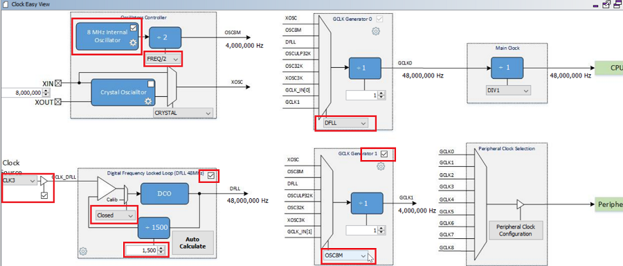
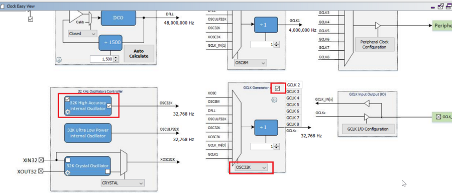
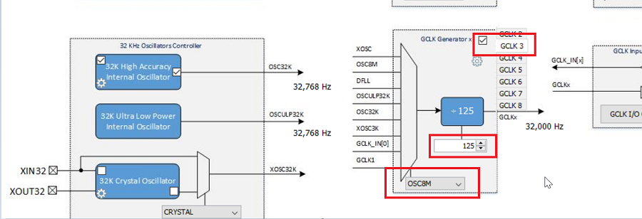
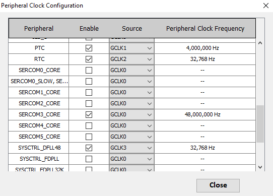
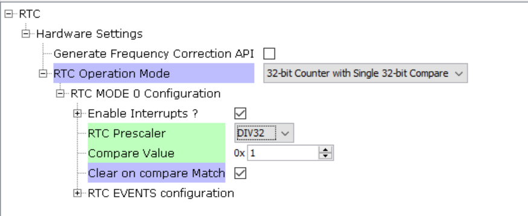
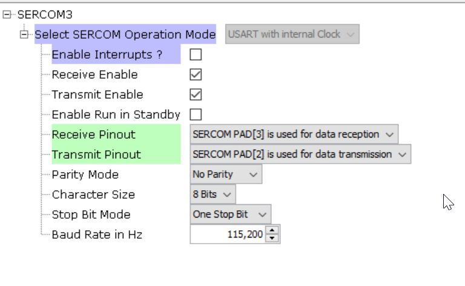
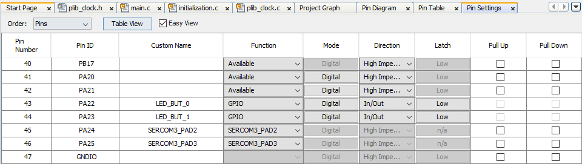
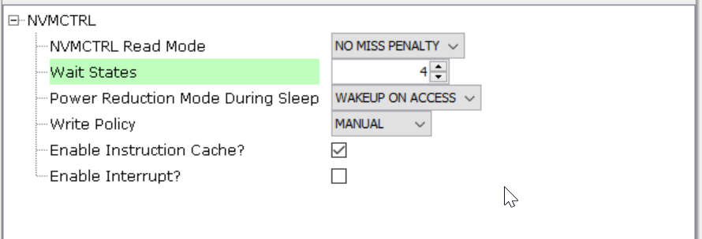

Clock Configuration for SAMD20 device:




RTC Configuration:

SERCOM Configuration:
Note: This configuration is for the Xplained Pro boards. You can choose the SERCOM as per the board design.
Refer to Xplained Pro’s user guide to know which SERCOM to use.

Pin Configuration:

Manually configuring Wait States
The flash waits states needs to be configured based on the CPU clock frequency. This information is available in “NVM Characteristics” section of device data sheet. By default, the number of wait states is set to 0. To adjust the number of flash wait states, the following code should be altered manually within the Clock initialization routine.
Reference : Register description section 20.8.2  http://ww1.microchip.com/downloads/en/DeviceDoc/60001504B.pdf
http://ww1.microchip.com/downloads/en/DeviceDoc/60001504B.pdf

|
MPLAB Harmony Touch Library Help
|